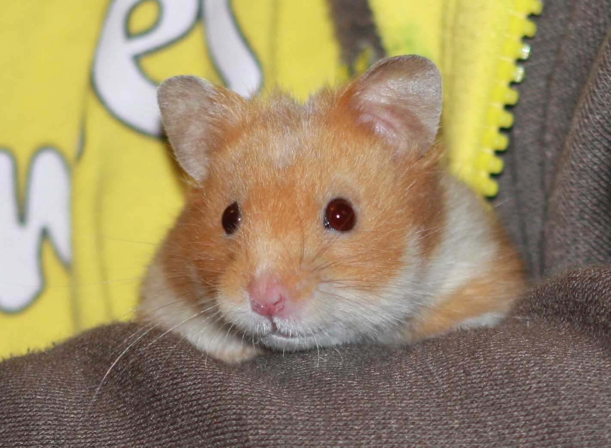

Happiness, happiness, the greatest gift that I possess
20-Apr-2017 | Milku
Especially if there are broccoli and mealworms in my snack dish.
While investigating the contribution that hamsters have made to science, I came across the following comment in the Smithsonian Magazine:
“Hundreds, maybe thousands, of papers have been written about laboratory hamsters. They have been used to understand circadian rhythms, chemical communication and other aspects of basic mammal biology. But their greatest research impact has been in the context of medicine. Hamsters long served as one of the most important “guinea pigs” and helped build our understanding of human ailments and their treatments.“
It’s nice that we’re helping make scientific progress, but really I wish scientists would use real guinea pigs for their experiments. Can’t they tell the difference between rodents?
I’ll have to delve deeper into the science journals, but I was side-tracked by a couple of studies that focused on hamster happiness and aggression.
In the study of happiness, researchers wanted to check whether mood affected hamsters’ behaviour and decision-making, along the lines of stress causing humans to indulge in a spot of comfort eating. Sometimes, I wonder whether my humans are stressed given the amount of snacking that goes on… Anyway, 30 Syrian hamsters were split into 2 groups. One group were given wonderful accommodation, filled with toys, ramps and bedding. The other group were given the basics, just minimal bedding and a wheel. The hamsters had been trained to know that water bottles on the left hand side of the test area were filled with bitter quinine water and bottles placed on the right hand side contained sweetened water. During the experiment, additional ordinary water bottles were placed between the two extremes. The researchers watched to see which bottles the hamsters drank from.
Apparently, hamsters living in luxurious conditions were 12% more likely to drink from the ordinary water bottles than the hamsters in the spartan surroundings, who presumably sought comfort from the sugary water. When the hamsters swapped cages, their behaviour changed too.
Scientists at Georgia State University and the Center for Behavioral Neuroscience in Atlanta have studied the brain chemistry of Syrian hamsters to try to determine whether it influences behaviour. And why did they choose hamsters? It was because we’re a bit antisocial so there were fewer behavioural factors to consider.
When any two hamsters are in close proximity, they’ll try to determine who is dominant by fighting. The winner gets to mark up the territory with scent so that no one is in any doubt about who is the top hamster and everyone can just stop battling.
Apparently, researchers have discovered that the chemical, vasopressin, will cause hamsters to start this scent marking. In fact, when it was injected into a certain part of the brain, the hamsters would spend about ten minutes doing nothing but scent-marking. When the chemical that inhibits vasopressin was injected into the hamsters, they wouldn’t scent-mark at all, even in situations where they normally would. Read more about the study by using this link to sciencenetlinks.com.
Given testosterone levels affect the way in which hamsters react to vasopressin, the effects of chemicals on hamsters isn’t straightforward, but the researchers are hoping that this work will give insights into human behaviour.
I think it might be worth accepting a bit of hamster company if it stops humans studying us. Of course, if the experiments involved snacking I might think again...